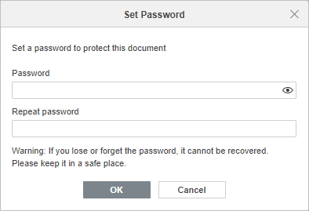
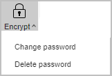

Zaštita tabela lozinkom
Možete kontrolisati pristup tabeli postavljanjem lozinke koja je potrebna koautorima za ulazak u režim uređivanja. Lozinka se može kasnije promeniti ili ukloniti. Postoje dva načina za zaštitu tabele lozinkom: korišćenjem kartice Protection ili kartice File.
Lozinka ne može biti vraćena ako je izgubite ili zaboravite. Molimo vas da je čuvate na bezbednom mestu.
Podešavanje lozinke pomoću kartice Protection.
- idite na karticu Protection i kliknite na dugme Encrypt.
-
u prozoru Set Password koji se otvori unesite i potvrdite lozinku koju ćete koristiti za pristup ovom fajlu. Kliknite na da biste prikazali ili sakrili karaktere lozinke tokom unosa.

- kliknite na OK da potvrdite.
-
dugme Encrypt na gornjoj traci sa alatkama prikazuje se sa strelicom kada je fajl šifrovan. Kliknite na strelicu ako želite da promenite ili obrišete lozinku.

Promena lozinke
- idite na karticu Protection na gornjoj traci sa alatkama,
- kliknite na dugme Encrypt i izaberite opciju Change password iz padajuće liste,
- postavite lozinku u polje Password i ponovite je u polju Repeat password ispod, zatim kliknite na OK.
Brisanje lozinke
- idite na karticu Protection na gornjoj traci sa alatkama,
- kliknite na dugme Encrypt i izaberite opciju Delete password iz padajuće liste.
Podešavanje lozinke pomoću kartice File.
- idite na karticu File na gornjoj traci sa alatkama,
- izaberite opciju Protect,
- kliknite na dugme Add password,
- postavite lozinku u polje Password i ponovite je u polju Repeat password ispod, zatim kliknite na OK.
Promena lozinke
- idite na karticu File na gornjoj traci sa alatkama,
- izaberite opciju Protect,
- kliknite na dugme Change password,
- postavite lozinku u polje Password i ponovite je u polju Repeat password ispod, zatim kliknite na OK.
Brisanje lozinke
- idite na karticu File na gornjoj traci sa alatkama,
- izaberite opciju Protect,
- kliknite na dugme Delete password.